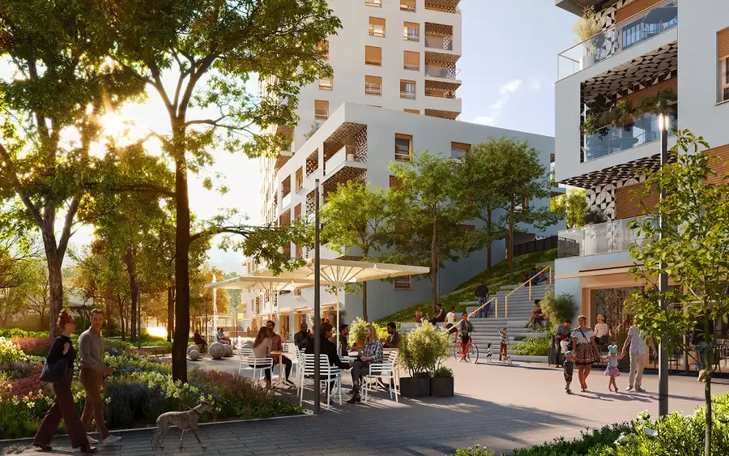
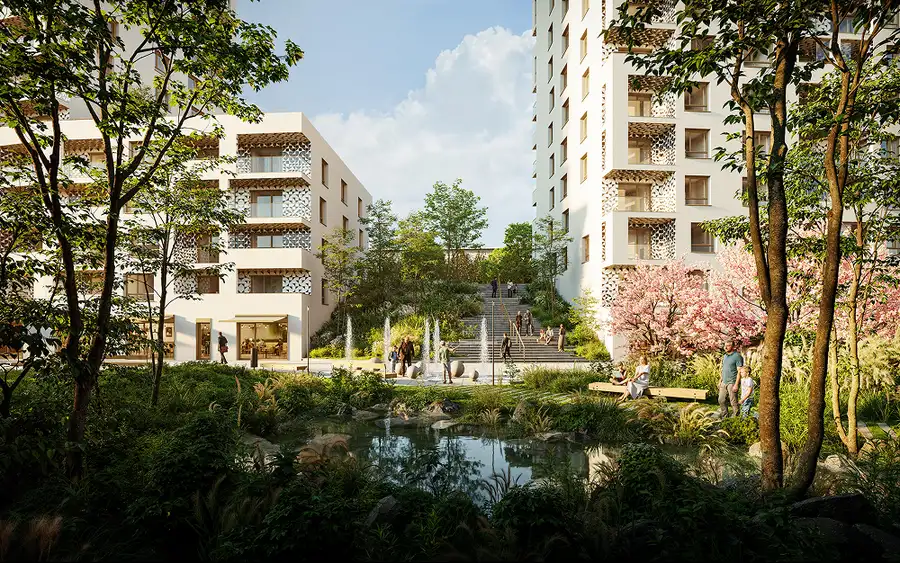
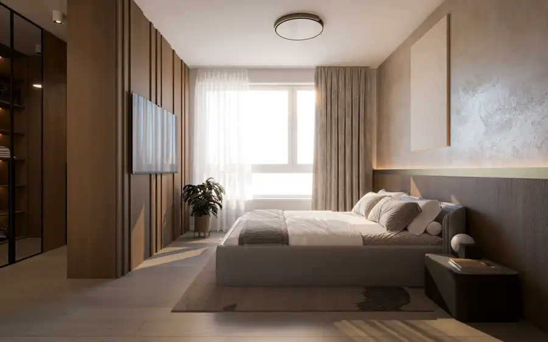
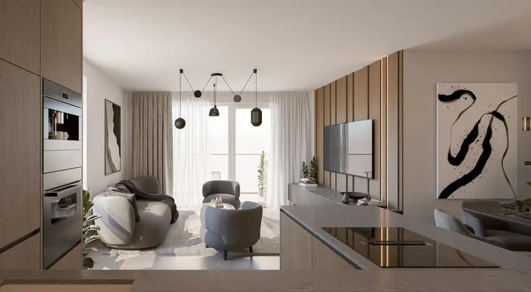
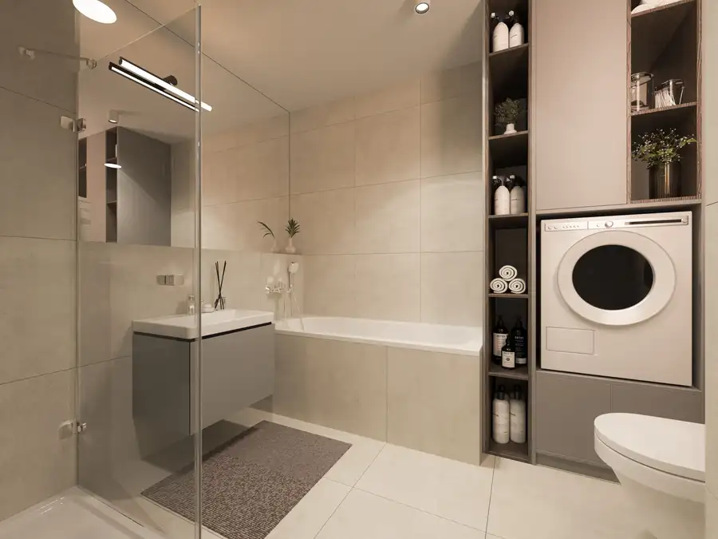
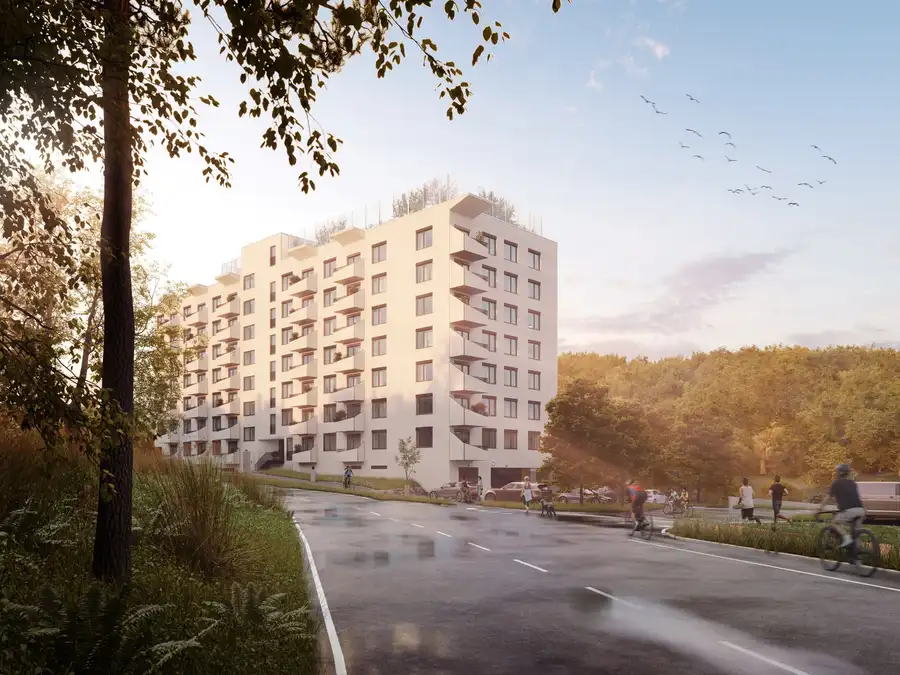
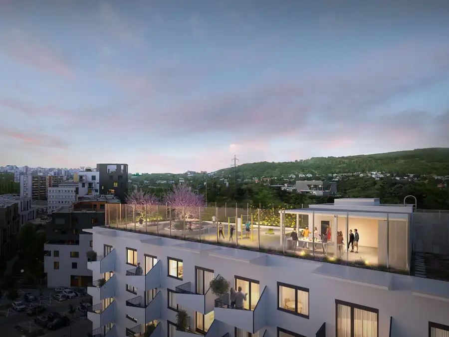

Predpredaj_Čerešne nová etapa plaza predaj 4i bytu_dokončenie 2029
Dúbravka, Bratislava






- Dispozícia4-izbový
- Plocha100.34 m²
- Poschodie15. z 15
- StavNovostavba
- Energetická triedaA
O nehnuteľnosti
Ponúkame na predaj novú etapu Čerešní - PLAZU, 4 izbový BYT so juhovýchodnou orientáciou T152 - výmera interiéru je 95,55 m2 plus loggia 4,79 m2 spolu o výmere 100,34 m2. Byt sa nachádza na 15.NP z 15.NP smerom na vnútrobloky a les Sitina. Orientácia bytu je JV. Byt bude dokončený do stavu štandard.https://www.ceresne.sk/ponuka-bytov/byt/t152/NOVÁ 5.etapa Čerešne PLAZA prináša najmestskejšiu časť Čerešní - Čerešnička Čerešní, prvé dúbravské námestie s občianskou vybavenosťou, výborné dispozície bytov, loggie s keramickým obkladom, stráženú bicyklovú miestnosť, strešnú terasu s komunitnou klubovňou s úžasnými výhľadmi, blízkosť Lesoparku Sitina, cyklotrasu smerom na Železnú studničku, pešie ťahy s výraznými prvkami zelene, námestie s fontánou a exteriérovým sedením v zeleni, vysoký nadštandard - stropné kúrenie a chladenie, keramické obklady 60x60cm a sanita Villeroy and Boch, bezfalcové dvere 2,10m vysoké, jednolamelové drevené podlahy, predpríprava na vonkajšie žalúzie, zvýšená nepriezvučnosť deliacich SDK priečok. VÝHODNÉ FINANCOVANIE: 9,9%, zvyšok po kolaudáciíSCHVÁLENÉ PRÁVOPLATNÉ STAVEBNÉ POVOLENIEPREDPOKLADANÉ UKONČENIE VÝSTAVBY /2029-2030/ PROJEKT ČEREŠNE sa nachádza na bratislavských Poliankach v Dúbravke, 10 minút cesty autom alebo MHD do centra Bratislavy.Čerešne Fine Living vynikajú jedinečnou architektúrou, každá etapa je niečím výnimočná, vysokou kvalitou stavby, nadčasovosťou, dôrazom na komunitné spolužitie, ale najmä prémiovým nadštandardom.Predajná cena bytu je 463 141,- Eur. Parkovacie státie 2x vnútorné cena 26 000,- Eur/1 parking.Mgr. Anna Benkeová m: +421 905 444 044email: benkeova@itb.sk
Parametre
- Cena vrátane energií
- Nie
- Druh
- 4 izbový byt
- Dátum zverejnenia
- 28. 01. 2026
- Energetický certifikát budovy
- A
- Orientácia
- Juhovýchodná
- Podlažie
- 15
- Počet izieb / miestností
- 4
- Počet lodžií
- 1
- Počet nadzemných podlaží
- 15
- Rok kolaudácie
- 2029
- Rok výstavby
- 2026
- Stav nehnuteľnosti
- Novostavba
- Typ
- Predaj
- Typ konštrukcie
- Železobetónová
- Umiestnenie
- Posledné podlažie
- Vybavenie
- Lodžia
- Úžitková plocha
- 100.34 m²
Kde to je


Mohlo by Vás zaujímať

BytNové 262 984 €Čerešne etapa up predaj 2i apartmánu_dokončenie 2027 Dúbravka, Bratislava 48.61 m²7. podlažie
BytNové 289 723 €Čerešne etapa up predaj 3i apartmánu _dokončenie 2027 Dúbravka, Bratislava 63.71 m²1. podlažie BytNové 245 604 €Predpredaj_Čerešne nová etapa plaza predaj 2i bytu_dokončenie 2029 Dúbravka, Bratislava 2-izbový46.62 m²2. podlažie